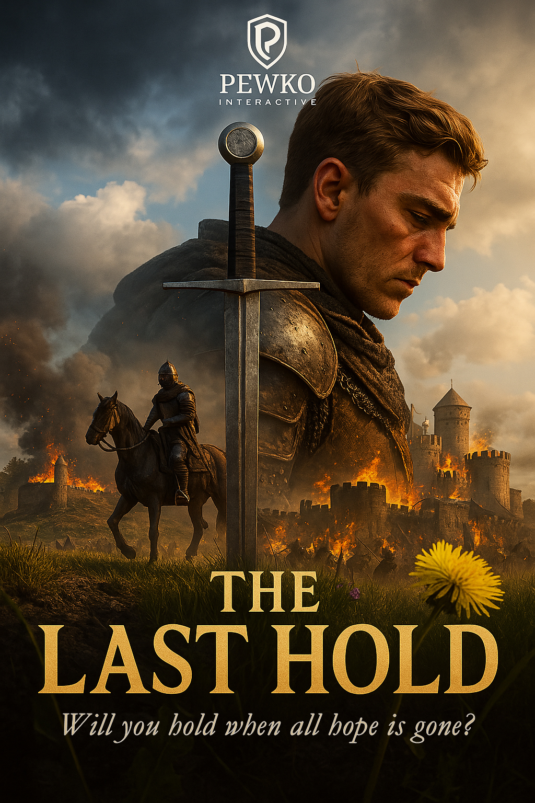

À Pewko Interactive, nous créons des jeux narratifs forts, immersifs et chargés de sens. Nous croyons au pouvoir de la narration interactive pour faire vivre des émotions mémorables aux joueurs.
Pewko Interactive est un studio indépendant basé en Belgique, fondé en 2025. Notre objectif est de créer des jeux ambitieux portés par une vision artistique forte, une narration engageante et une vraie attention portée aux choix du joueur.
The Last Hold est un jeu narratif et stratégique à la première personne. Gérez un château assiégé pendant 30 jours, prenez des décisions difficiles, et survivez aux trahisons comme à la famine.
